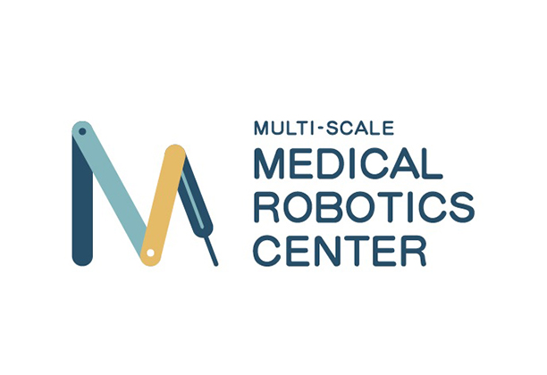

[2026/09] 🎉 FingerViP is accepted to CoRL 2026! Bring vision to the fingertips!
[2026/07] 🎉 RealSimLoop is accepted to SIGGRAPH Asia 2026!
[2026/07] I pass the written exam of my Ph.D. Candidacy Examination.
[2026/06] ✈️ I attend ICRA 2026 in Vienna, Austria, and present our RA-L paper.
[2025/05] 🎉 Our paper about 3D volumetric deformable object manipulation with occupancy is accepted to RA-L!
[2025/01] 🎓 I begin my Ph.D. journey at MAE, CUHK.
[2024/09] Our workshop paper about a data collection platform for DOM is accepted to CoRL 2024 Workshop LFDM.
[2024/05] ✈️ I attend ICRA 2024 in Yokohama, Japan, and give an oral presentation of our paper.
[2024/01] 🎉 Our paper about interactive navigation with traversable objects is accepted to ICRA 2024, Yokohama, Japan!
Research
I'm interested in robotics, especially dexterous manipulation and robot learning. My current research focuses on dexterous manipulation with multi-fingered robotic hands. My previous research focused on 3D volumetric deformable object manipulation and quadruped robots. Representative works are highlighted.
@article{zhang2026fingervip,
title={FingerViP: Learning Real-World Dexterous Manipulation with Fingertip Visual Perception},
author={Zhang, Zhen and Wang, Weinan and Sun, Hejia and Ding, Qingpeng and Chu, Xiangyu and Fang, Guoxin and Au, KW},
journal={arXiv preprint arXiv:2604.21331},
year={2026}
}
Conference on Robot Learning (CoRL), 2026
FingerViP integrates miniature cameras into robotic fingertips and learns a diffusion-based visuomotor policy from demonstrations, enabling dexterous manipulation with multi-view fingertip visual feedback.
@article{cen2026realsimloop,
title={RealSimLoop: Online Real-to-Sim Adaptation via Differentiable Reduced-Order Simulation with Vision Feedback},
author={Cen, Zhihao and Xian, Chuhua and Sun, Hailin and Liufu, Yuliang and Zhang, Zhen and Chu, Xiangyu and Cai, Hongmin and Zhang, Yunbo and Fang, Guoxin},
journal={arXiv preprint arXiv:2609.09828},
year={2026}
}
SIGGRAPH Asia 2026
RealSimLoop combines differentiable reduced-order simulation with 3D Gaussian Splatting to adapt physical parameters online from visual feedback, enabling external force prediction and 3D stress field reconstruction.
@article{zhang2025manipulating,
title={Manipulating Elasto-Plastic Objects With 3D Occupancy and Learning-Based Predictive Control},
author={Zhang, Zhen and Chu, Xiangyu and Tang, Yunxi and Zhao, Lulu and Huang, Jing and Jiang, Zhongliang and Au, K. W. Samuel},
journal={IEEE Robotics and Automation Letters},
year={2025},
publisher={IEEE}
}
IEEE Robotics and Automation Letters (RA-L)
This work proposes a novel framework for elasto-plastic object manipulation,
leveraging 3D occupancy to represent such objects, a learned dynamics model trained with 3D occupancy,
and a learning-based predictive control algorithm.
@article{zhang2024dofs,
title={DOFS: A Real-world 3D Deformable Object Dataset with Full Spatial Information for Dynamics Model Learning},
author={Zhang, Zhen and Chu, Xiangyu and Tang, Yunxi and Au, K. W. Samuel},
journal={arXiv preprint arXiv:2410.21758},
year={2024}
}
CoRL 2024 Workshop LFDM
This work proposes a pilot dataset of 3D deformable objects (e.g., elasto-plastic objects)
with full spatial information (i.e., top, side, and bottom information)
using a novel and low-cost data collection platform with a transparent operating plane.
@inproceedings{zhang2024interactive,
title={Interactive navigation in environments with traversable obstacles using large language and vision-language models},
author={Zhang, Zhen and Lin, Anran and Wong, Chun Wai and Chu, Xiangyu and Dou, Qi and Au, K. W. Samuel},
booktitle={2024 IEEE International Conference on Robotics and Automation (ICRA)},
pages={7867--7873},
year={2024},
organization={IEEE}
}
IEEE International Conference on Robotics and Automation (ICRA), 2024
This work proposes an interactive navigation framework using large language and vision-language models,
allowing robots to navigate in environments with traversable obstacles (e.g., curtains).
Experience
Ph.D. Student · The Chinese University of Hong Kong 2025/01 – Present
Department of Mechanical and Automation Engineering

Research Assistant · MRC-CUHK 2023/08 – 2024/12
M.Sc. Student · The Chinese University of Hong Kong 2022/09 – 2023/06
{kind=link}